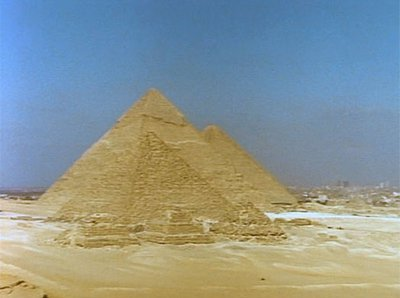
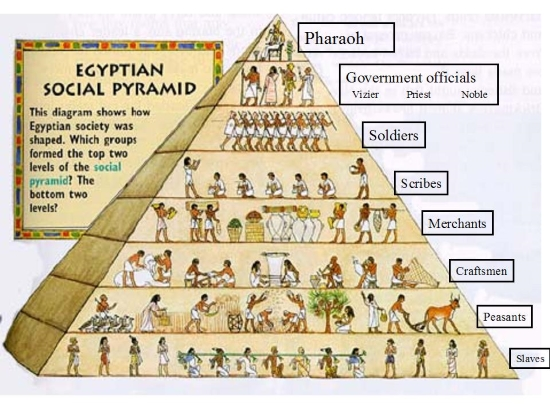
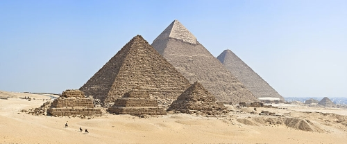
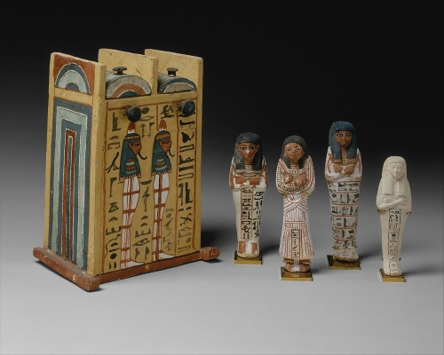
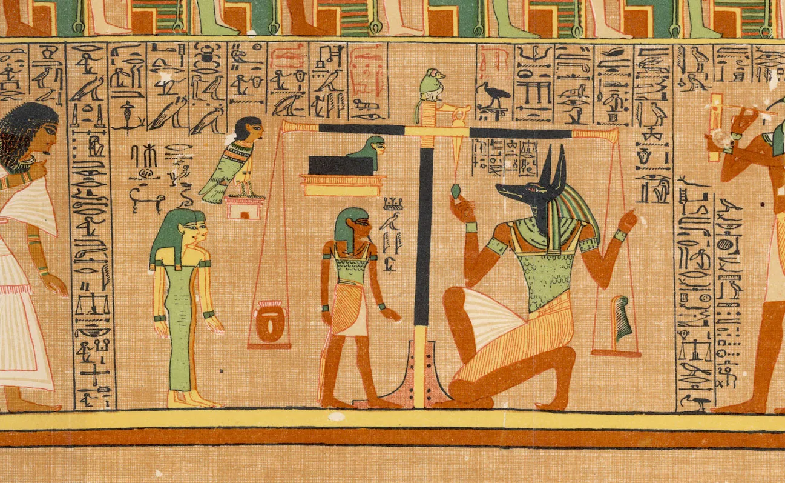

Welcome to my web page. This web page contains various facts about ancient egypt.
People have been living in Egypt as early as 6000 B.C. As time has passed smaller villages combined together to become larger states. lower Egypt covers the Nile River Delta all the way up towards the Mediterranean sea, while north and Upper Egypt is covered by the Nile Valley. Somtime around 3100 B.C., The pharaoh Narmer, also called Menes, united these two lands to be one country.
Society was structured in a strict class system. The pharaoh was on top, followed by his vizier, the nobles, and then the scribes and priests. Below these groups were the skilled craftsmen, farmers, laborers, and slaves. Daily life in Ancient Egypt varied according to one's social class , which would dictate one's work assignment. Nearly everyone, however, dressed simply in linen, ate a diet consisting mainly of grains, vegetables, and beer, played sports and board games, and lived in buildings made from mud bricks.
The Great Pyramid was the largest building constructed during ancient Egypt. The Great Pyramid of Giza is more than 4500 years old and built from over 2 million huge blocks of limestone. Originally, the pyramids would have been covered in limestone, but that was taken and reused to build the city of Cairo.
The burial practices of ancient Egyptians were complex. To prepare a body for burial and to preserve the body for the afterlife, the body was embalmed through the process of mummification. Mummification was a long process that required over a month to complete. Once a body was ready for burial a funeral was held for the family of the deceased. The funeral included rituals, spells, and good giving to ensure the dead had what they needed for the afterlife.
Ancient Egyptians created paintings, sculptures, reliefs, drawings on papyrus, jewelry, and many other kinds of art. Larger kinds of art include the construction of pyramids, palaces, and temples. Examples of Egyptian art include reliefs, paintings, and statues found inside tombs, including the pyramids. Other types of art include pottery, clay figurines, and coffins.